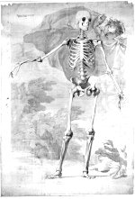

Bernard Siegfried Albinus, Tekening van het menselijk skelet van voren gezien, uitgevoerd door Jan Wandelaar. Gewassen pentekening, in grijs en met wit gehoogd. Zes aaneengeplakte bladen papier, samen groot circa 1900 x 1200 mm. Leiden, circa 1740. -- (BPL 1914 I)
Sinds 1732 wist de Leidse anatoom Bernard Siegfried Albinus zich verzekerd van de diensten van de begaafde tekenaar en graveur Jan Wandelaar (1690-1759), die onder meer bij Gerard de Lairesse (zie nummer 77) in de leer was geweest en ervaring met de problematiek van het anatomisch tekenen had opgedaan bij de Amsterdamse hoogleraar Frederik Ruysch (1638-1731).
De samenwerking tussen Albinus en Wandelaar resulteerde in de meest ambitieuze anatomische atlas van de achttiende eeuw. Door een gelukkig toeval zijn de voorstudies en een aantal van de oorspronkelijke tekeningen bewaard gebleven. Daaronder bevinden zich drie tekeningen van het menselijk skelet op natuurlijke grootte, waarvan hier de eerste getoond is.
Uitgangspunt voor Albinus was de ‘homo perfectus’ (de volmaakte mens). Hij koos daarvoor het skelet van een jonge man in de bloei van zijn leven, die ook in zijn houding kracht en vitaliteit moest uitdrukken Van een voor ons wetenschappelijk aanvaardbare bepaling van het gemiddelde skelet was aldus geen sprake. Zelfs natuurlijke variaties, die afbreuk deden aan dat schoonheidsideaal, werden genegeerd. Het feit dat op de tekening de benen naar verhouding te lang zijn, is ongetwijfeld het gevolg van dat streven naar perfectie.
Om dat ideaal in een afbeelding vast te leggen moest het skelet niet alleen met een ingewikkelde constructie worden opgehangen, maar dienden ook de gewrichtsbanden tijdens het langdurige tekenproces voortdurend te worden verzorgd om bederf te voorkomen. Maar er was meer nodig. Voor een volmaakte weergave moesten alle door de waarneming veroorzaakte afwijkingen, samen met de daaruit voortkomende perspectivische vertekeningen, worden uitgebannen. Elke afstand diende door exacte meting te worden vastgelegd. Om dat te bereiken werd gebruik gemaakt van een in vierkantjes verdeeld raamwerk, dat vóór het skelet geplaatst werd en dat op het tekenpapier was herhaald. De figuur werd met behulp van een kijker op grote afstand geobserveerd en op het papier werd vervolgens kwadraat na kwadraat in grote lijnen ingevuld. Voor de detaillering moest de tekenaar van nabij zijn waarnemingen doen. Hij bediende zich daartoe, weer om de vereiste precisie te kunnen handhaven, van een analoog, sterk verkleind raamwerk, dat op een vaste, korte afstand van het object werd geplaatst. Zo verkreeg hij een tekening die in haar perfectie nimmer meer zou worden herhaald.
Literatuur
- H. Punt, Bernard Siegfried Albinus (1697-1770): on ‘human nature’. Anatomical and physiological ideas in eighteenth-century Leiden. Amsterdam 1983.
| vorige pagina | top pagina |